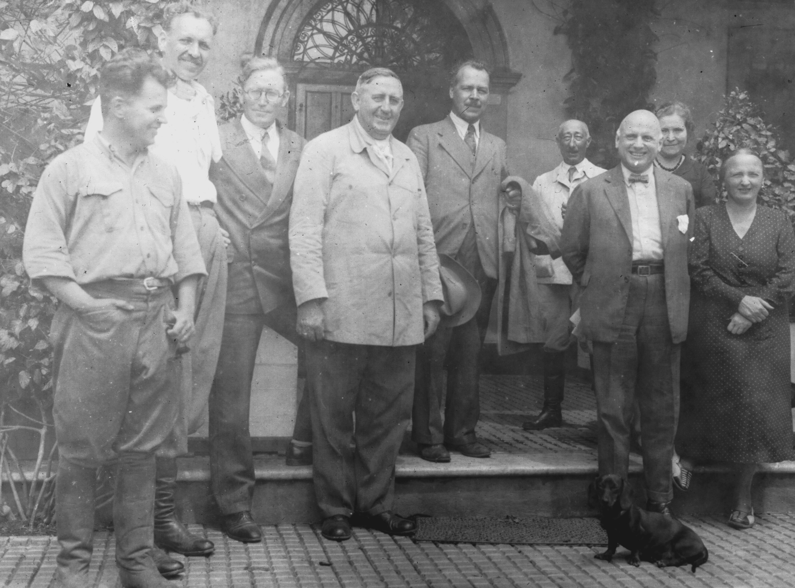

Nikolai Ivanovich Vavilov
The man who feeds the world.

Vavilov (fifth from left to right) alongside geneticist Albert Boerger during his visit to Uruguay in 1937
Here's a timeline for Vavilov's life:
- 1887 - Born in Moscow.
- 1910 - Graduated from Moscow Agricultural Institute.
- 1911-1912 - Worked at the Bureau for Applied Botany and at the Bureau of Mycology and Phytopathology.
- 1913-1914 - Travelled to Europe and studied plant immunity, in collaboration with the British biologist William Bateson, who helped establish the science of genetics.
- 1917-1920 - Became a professor at the Faculty of Agronomy, University of Saratov.
- 1918 - Had a son Oleg from his first wife Yekaterina Sakharova.
- 1924 - Became the director of the Lenin All-Union Academy of Agricultural Sciences at Leningrad.
- 1927 - While developing his theory on the centers of origin of cultivated plants, Vavilov organized a series of botanical-agronomic expeditions, and collected seeds from every corner of the globe.
- 1927 - Presented the centers of origin to the public on the V International Congress off Genetics in Berlin (V. Internationaler Kongress für Vererbungswissenschaft Berlin).
- 1927 - Created the world's largest collection of plant seeds in Leningrad.
- 1928 - His second son Yuri was born.
- 1939 - Criticized the non-Mendelian concepts of Lysenko, a rival scientist who won support from Stalin.
- 1940 - Arrested by Soviet government, due to his falling out of favor from Stalin.
- 1941 - Sentenced to death by Stalin and his government.
- 1942 - Vavilov's sentences was commuted to twenty years of imprisonment.
- 1943 - Died in Soviet prison due to starvation.
"His story illustrates the dangerous mixture of politics and science that can pervert scientific research and stall technological advancement."
-- Roll-Hansen, 2005
For more about the story of this unsung hero, you can check on his Wikipedia page